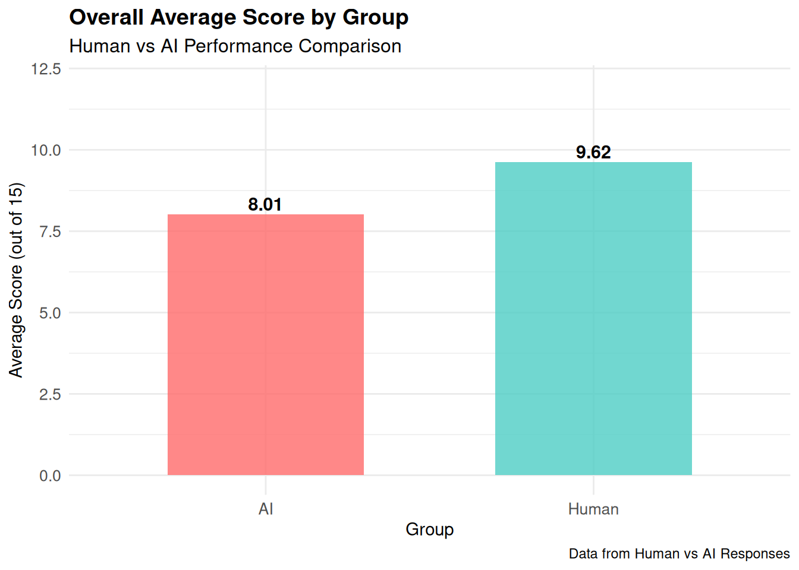
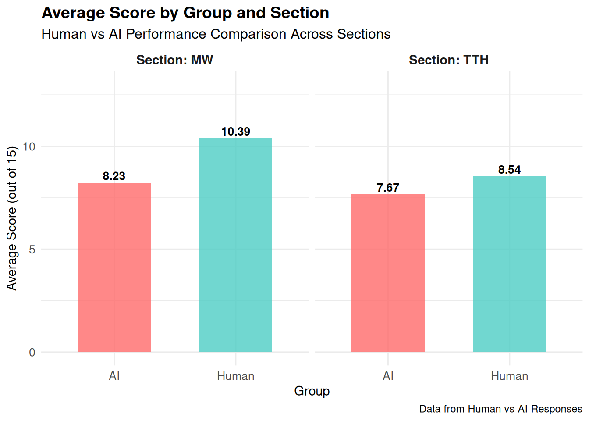
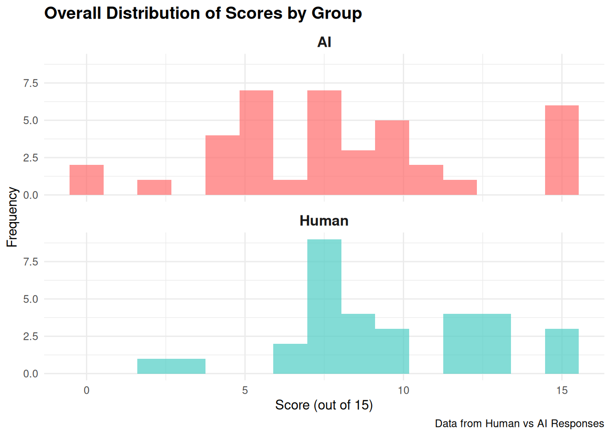
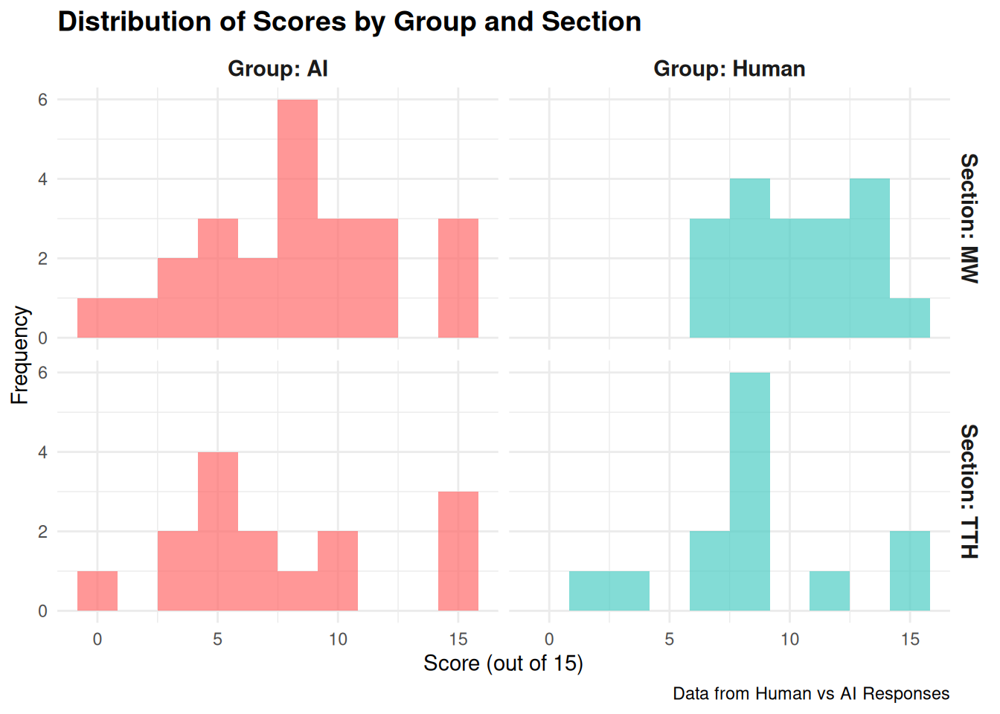
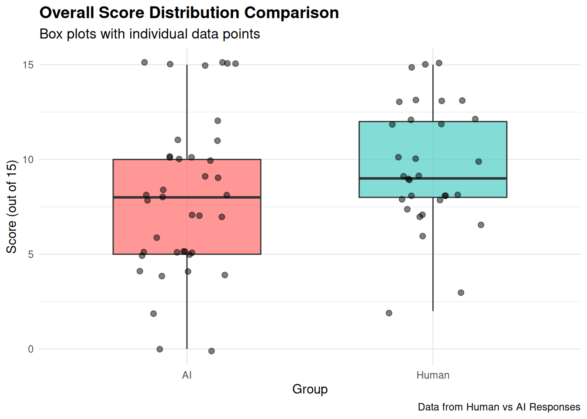
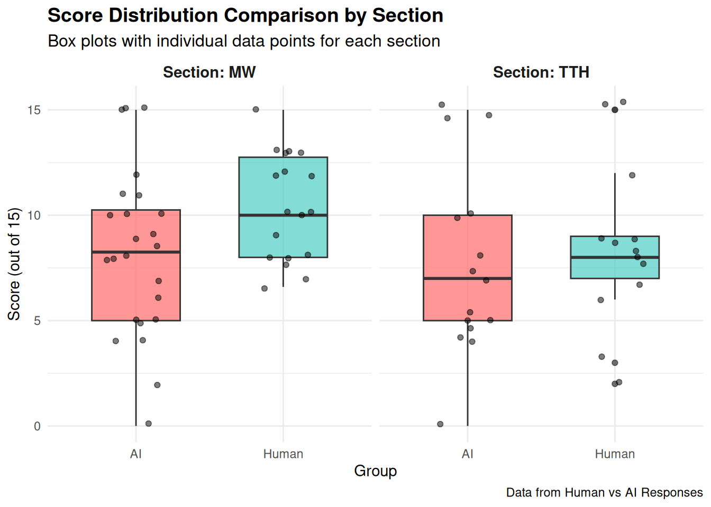

── Attaching core tidyverse packages ──────────────────────── tidyverse 2.0.0 ──
✔ dplyr 1.1.4 ✔ readr 2.1.5
✔ forcats 1.0.0 ✔ stringr 1.5.2
✔ ggplot2 4.0.0 ✔ tibble 3.3.0
✔ lubridate 1.9.4 ✔ tidyr 1.3.1
✔ purrr 1.1.0
── Conflicts ────────────────────────────────────────── tidyverse_conflicts() ──
✖ dplyr::filter() masks stats::filter()
✖ dplyr::lag() masks stats::lag()
ℹ Use the conflicted package (<http://conflicted.r-lib.org/>) to force all conflicts to become errors
Attaching package: 'kableExtra'
The following object is masked from 'package:dplyr':
group_rowsHuman vs AI Score Analysis with Section Comparison
Introduction
This analysis compares performance scores between Human and AI participants in a test with scores ranging from 0 to 15. The analysis includes both overall comparisons and section-specific comparisons (MW vs TTH sections).
Warning: NAs introduced by coercion| Timestamp | Score | Group | Section |
|---|---|---|---|
| 9/10/2025 12:54:53 | 4.0 | AI | MW |
| 9/10/2025 12:54:59 | 10.0 | Human | MW |
| 9/10/2025 12:55:01 | 15.0 | AI | MW |
| 9/10/2025 12:55:03 | 10.0 | AI | MW |
| 9/10/2025 12:55:07 | 8.5 | AI | MW |
| 9/10/2025 12:55:18 | 7.0 | AI | MW |
Data Overview
Total observations: 70 AI entries: 39 Human entries: 31 Section breakdown:# A tibble: 2 × 3
Group MW TTH
<chr> <int> <int>
1 AI 24 15
2 Human 18 13Summary Statistics
Overall Summary Statistics
| Group | Count | Mean | Median | Std Dev | Min | Max |
|---|---|---|---|---|---|---|
| AI | 39 | 8.01 | 8 | 4.13 | 0 | 15 |
| Human | 31 | 9.62 | 9 | 3.24 | 2 | 15 |
Section-Specific Summary Statistics
| Group | Section | Count | Mean | Median | Std Dev | Min | Max |
|---|---|---|---|---|---|---|---|
| AI | MW | 24 | 8.23 | 8.25 | 3.95 | 0.0 | 15 |
| AI | TTH | 15 | 7.67 | 7.00 | 4.53 | 0.0 | 15 |
| Human | MW | 18 | 10.39 | 10.00 | 2.54 | 6.6 | 15 |
| Human | TTH | 13 | 8.54 | 8.00 | 3.86 | 2.0 | 15 |
Visualizations
Overall Average Scores

Average Scores by Section (Faceted)

Distribution of Scores Overall

Distribution of Scores by Section

Box Plot Comparison Overall

Box Plot Comparison by Section (Faceted)

Statistical Analysis
Overall Statistical Comparison
=== OVERALL COMPARISON ===
Two-sample t-test results:
t-statistic: -1.82
p-value: 0.0732
95% Confidence Interval for difference in means: -3.36 to 0.15
Cohen's d (effect size): 0.426 Section-Specific Statistical Analysis
=== SECTION-SPECIFIC COMPARISONS ===
--- Section: MW ---
Sample sizes: AI = 24 , Human = 18
t-statistic: -2.157
p-value: 0.0372
95% CI for difference: -4.2 to -0.13
Cohen's d (effect size): 0.633
--- Section: TTH ---
Sample sizes: AI = 15 , Human = 13
t-statistic: -0.549
p-value: 0.5874
95% CI for difference: -4.13 to 2.39
Cohen's d (effect size): 0.206 Key Findings
Overall Performance
OVERALL RESULTS:
• Human participants achieved an average score of 9.62 out of 15
• AI participants achieved an average score of 8.01 out of 15
• Difference: Humans scored 1.61 points higher on average ( 20.1 % difference)
• The difference is not statistically significant (p = 0.0732 )
• Effect size (Cohen's d) = 0.426 , indicating a small to medium effectSection-Specific Performance
SECTION-SPECIFIC RESULTS:
--- Section MW ---
• Human average: 10.39 , AI average: 8.23
• Difference: 2.16 points
• Statistically significant difference (p = 0.0372 )
• Effect size: 0.633 ( medium to large )
--- Section TTH ---
• Human average: 8.54 , AI average: 7.67
• Difference: 0.87 points
• No statistically significant difference (p = 0.5874 )
• Effect size: 0.206 ( small to medium )Conclusion
The analysis reveals both overall and section-specific performance differences between human and AI participants in this assessment. The faceted analysis allows us to understand whether performance differences are consistent across sections or vary by section type. Key insights include:
Overall Performance: The combined analysis provides a general comparison between human and AI performance across all data.
Section-Specific Patterns: The faceted analysis reveals whether certain sections favor one group over another, which could indicate section-specific strengths or weaknesses.
Statistical Significance: Both overall and section-specific statistical tests help determine whether observed differences are likely due to chance or represent genuine performance differences.
Effect Sizes: Cohen’s d values provide insight into the practical significance of any differences, helping to understand not just whether differences exist, but how meaningful they are.
This comprehensive analysis framework allows for both broad and detailed insights into Human vs AI performance patterns across different test sections.